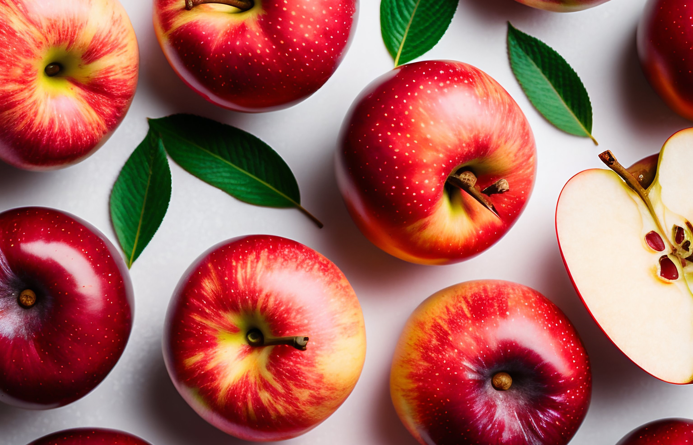

Curiosidades gastronómicas
Envíame las tuyas y las compartiré aquí, ¡juntos podemos aprender más cada día!
¿La miel tiene fecha de caducidad?
Por supuesto que sí, pero debido a su composición rica en agua, azúcar y una fuerte presión osmótica, la miel adecuadamente conservada puede ser consumida hasta 2 o 3 años después de ser envasada...¿Lo sabías?

¿Existen semillas que pueden ser peligrosas de ser ingeridas?
Efectivamente, la respuesta es sí. Incluso una fruta tan común como la "Manzana" puede jugarte una mala pasada si consumes en exceso sus semillas. Estas contienen amigdalina, una sustancia que, en grandes cantidades, puede convertirse en cianuro y provocar fuertes dolores de estómago. ¡Ten precaución!
Un festín de proteínas
¿Sabías que la Palta o Aguacate es el alimento de origen natural más rico en proteínas? Contiene más proteínas que cualquier otra fruta y se puede combinar de diversas formas, ya sea en ensaladas, aderezos, acompañamientos e incluso postres. Sin embargo, ten cuidado si tienes aves, ya que resulta altamente tóxico para estas pequeñas criaturas, pero es un deleite para nosotros.

Carne al plato
A nivel global, Estados Unidos encabeza la lista como el país con el mayor consumo de carne, seguido de Australia y nuestro amado país Argentina. Por otro lado, India se encuentra en el extremo opuesto, siendo el país con el menor consumo de carne de vaca, ya que en su cultura estos animales son considerados sagrados.